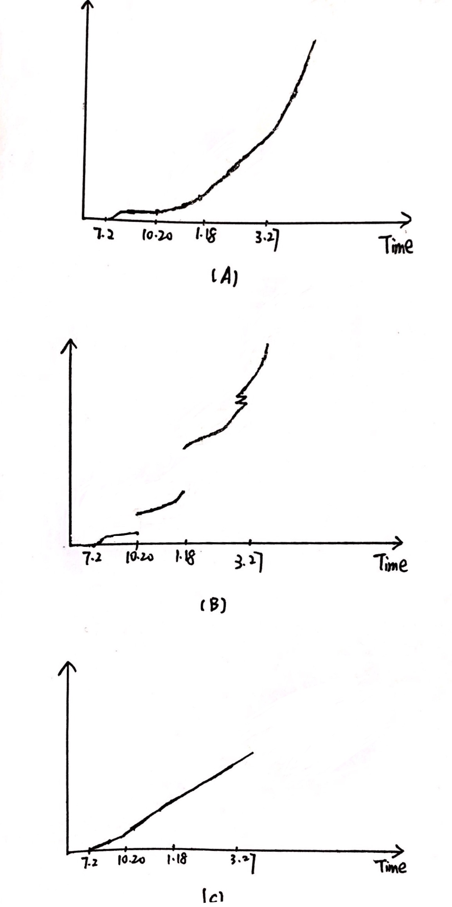
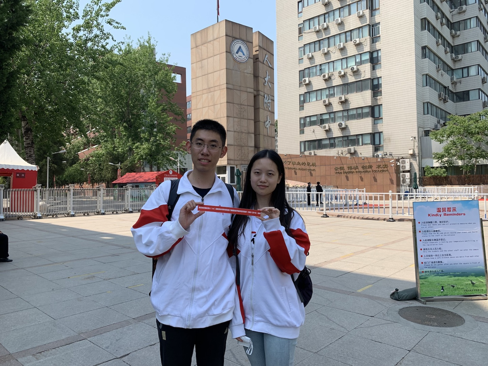
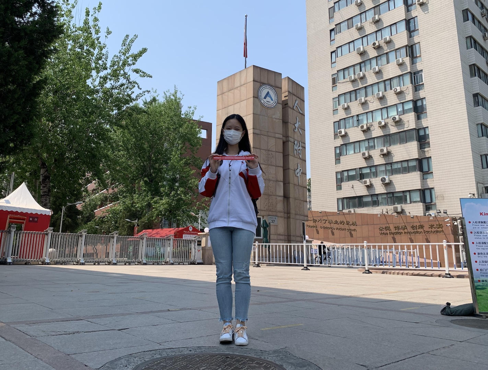
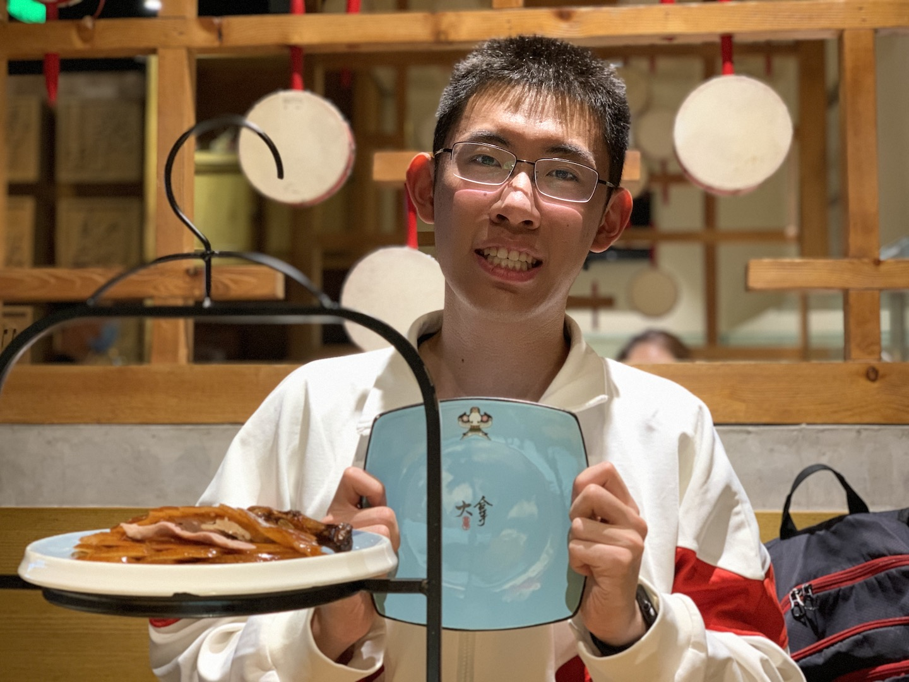
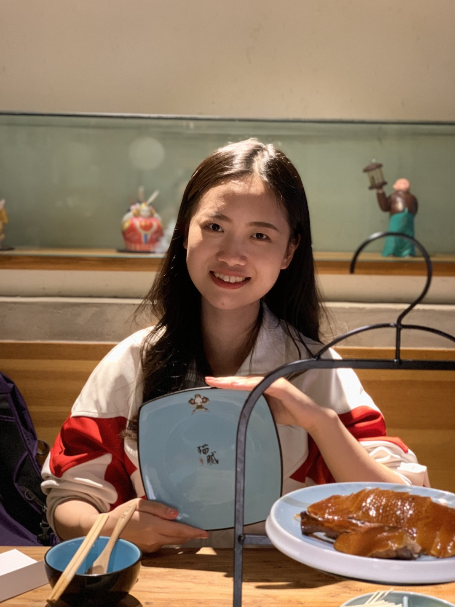

100 Days Anniversary ❤️ —— 没见面的69天 vs 见上面的31天
Jason：在post的最前面，先让我的小可爱Hayley挑一下，我的感情发展曲线是下面的哪一个呢～

今天的故事太多也太甜啦，我们在一起，哪里都很浪漫～
在下面的地图上mark一下我们一天的行程⬇️
人大附中
吃完午饭来到人大附中，我们在高三开学的第一天来到RDFZ的门口。都穿上校服，让Hayley带着Jason重新 感受了一下高中谈恋爱的生活～
Jason：收到小可爱的100天礼物：获奖的横幅，超级爱你。这样我既穿着校服谈恋爱，也收到啦获奖后的横幅，高中生活顿时感觉圆满啦❤️



微笑时刻
不多说啦，直接摆上图就是啦，顺便Jason要狠狠表扬一下他的小可爱的p图水平～
五道口
晚上我们来到五道口的局气餐馆吃晚饭，看到有意思的盘子便留下了下面的照片～
Hayley还说这个盘子上写的怎么这么符合hhh（Jason也莫名觉得有道理）


食宝街
晚上我们来到食宝街的上方，Hayley完成了自由人登山队培训的第一次训练
由于没有当晚的照片，就用第二天”小可爱’s redemption”来当作配图吧（Jason想说，他的小可爱Hayley真是太可爱啦）